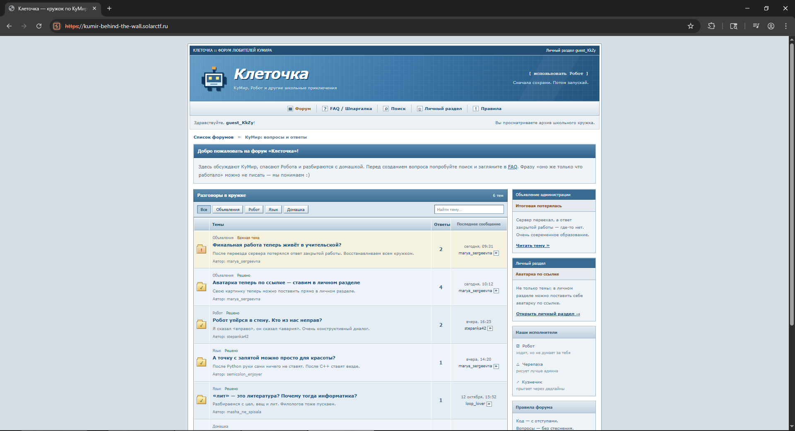
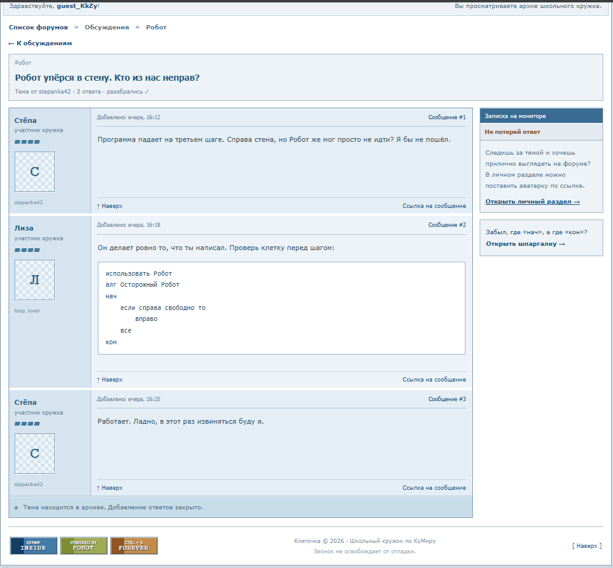

С чего начали
В docker-compose.yml веб-приложение подключено к сетям edge и govnonet, а сервис kumir-checker — только к внутренней govnonet. Значит, веб-приложение может обращаться к сервису, который не опубликован наружу.

Ход решения
01. Нашли точку для SSRF
В личном кабинете аватар устанавливался по URL. Если сервер сам загружает изображение и не ограничивает адрес назначения, такую функцию можно использовать для запроса к внутреннему сервису.
02. Получили подсказку от checker
Запрос к http://kumir-checker:8081/robot-final подтвердил доступ к внутреннему сервису. Диагностический ответ подсказал endpoint /teacher/check и нужные параметры. В обсуждении задания также нашлась подсказка о движении робота вправо.

03. Прочитали ответ проверки
Через ту же точку входа обратились к /teacher/check?task=robot-final&answer=вправо. Проверка вернула verdict: WA, но в поле expected оказался флаг. Успешно пройти проверку для его получения не потребовалось.
Полные запросы, ответы и рекомендации по защите приведены в оригинальном райтапе PDF.